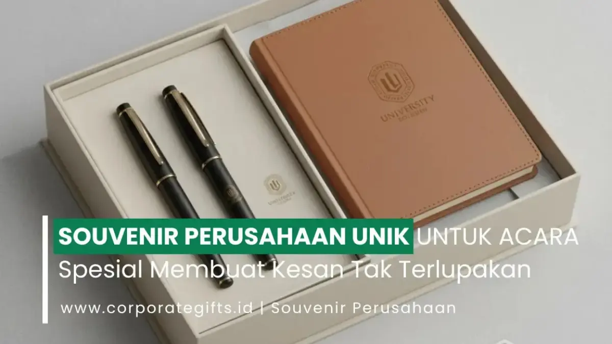

Corporate Gifts ID - Souvenir perusahaan unik adalah hadiah bernilai fungsi, estetika, dan pesan branding sekaligus, yang diberikan pada acara resmi seperti seminar, gathering, atau peluncuran produk untuk memperkuat identitas dan citra perusahaan di mata klien maupun karyawan.
Dalam dunia bisnis yang kompetitif, setiap detail kecil bisa meninggalkan kesan besar. Pemilihan souvenir yang tepat membantu perusahaan tampil profesional, mudah diingat, dan meninggalkan kesan positif jangka panjang. Souvenir bukan sekadar hadiah seremonial belaka, melainkan bagian integral dari strategi komunikasi korporat dan retensi hubungan kemitraan.
Melalui souvenir, Anda bisa menunjukkan karakter, nilai, hingga kepedulian tulus perusahaan terhadap penerimanya, baik itu klien VVIP, tamu undangan investor, maupun jajaran karyawan berprestasi. Dari acara peluncuran produk hingga gathering tahunan kantor, souvenir yang dipersiapkan dengan cermat akan mengabadikan momen berharga tersebut.
Poin Kunci Souvenir Perusahaan Unik:
- Dua Fungsi Utama: Menggabungkan kegunaan praktis sehari-hari dengan media promosi visual berkelanjutan.
- Green Branding: Pilihan souvenir ramah lingkungan mencerminkan kepedulian sosial dan komitmen CSR perusahaan.
- Sentuhan Personalisasi: Custom grafir nama atau monogram logo meningkatkan rasa dihargai pada penerima.
- Efisiensi Anggaran: Souvenir unik berkualitas tidak selalu mahal jika dirancang dengan konsep kreatif dan packaging rapi.
- Vendor Terpercaya: Pemilihan mitra vendor berpengalaman menjamin ketepatan waktu produksi dan kualitas presisi cetak logo.
Souvenir yang Memiliki Nilai Guna dan Branding Sekaligus
Souvenir yang bermanfaat sehari-hari selalu menjadi pilihan favorit karena tidak hanya indah dipandang, tetapi juga memberi manfaat nyata bagi kehidupan produktif penerimanya. Souvenir jenis ini dapat digunakan di rumah, meja kantor, maupun saat perjalanan dinas luar kota.
Setiap kali produk tersebut digunakan, penerima akan kembali teringat pada keramahan dan profesionalisme perusahaan Anda, menciptakan top-of-mind brand awareness secara alami tanpa terkesan memaksa.
Powerbank Custom Logo untuk Tamu Bisnis dan Peserta
Perangkat elektronik portabel seperti powerbank custom logo adalah pilihan ideal bagi peserta seminar, tamu bisnis eksekutif, atau rekan kerja yang memiliki mobilitas tinggi. Dengan kapasitas daya yang mumpuni serta finishing cetak UV warna tajam atau grafir laser, powerbank memberikan kesan modern dan futuristik.
Payung Lipat Eksklusif dan Pulpen Metal Engraved
Selain gadget, perlengkapan proteksi cuaca seperti payung lipat eksklusif dengan rangka anti-angin sangat berguna di segala kondisi dan memperluas jangkauan eksposur brand saat digunakan di ruang publik. Sementara itu, pulpen metal engraved berlapis krom memberikan impresi elegan saat penandatanganan berkas kontrak kerja sama maupun rapat dewan direksi.
Souvenir fungsional seperti ini menggabungkan fungsi optimal dan sarana promosi berkelas, menjadikannya sangat cocok untuk segala skala bisnis, mulai dari startup inovatif hingga konglomerasi korporat.

Kombinasi notebook cover kulit sintetis gravir logo dan pulpen metal premium sebagai souvenir eksklusif acara korporat.
Souvenir Ramah Lingkungan dan Bermanfaat untuk Green Branding
Tren keberlanjutan (sustainability) telah mengubah cara para pembuat keputusan di divisi HR, Marketing, dan Procurement dalam menentukan merchandise perusahaan. Kini, souvenir ramah lingkungan telah bertransformasi menjadi simbol tanggung jawab sosial dan komitmen nyata terhadap kelestarian bumi.
Perusahaan yang mengutamakan kampanye green branding terbukti lebih dihargai oleh publik, mitra internasional, serta talenta muda generasi milenial dan Gen Z yang sangat peduli pada isu kelestarian lingkungan.
Beberapa contoh souvenir unik ramah lingkungan yang paling diminati untuk pengadaan korporat antara lain:
- Set Alat Makan Kayu atau Bambu: Alternatif higienis pengganti sendok garpu sekali pakai, tahan lama, aman untuk makanan, dan memiliki tekstur kayu alami yang estetik.
- Sedotan Stainless atau Silikon Lipat: Dilengkapi pouch kain dan sikat pembersih mini, secara aktif mendukung gerakan bebas limbah plastik.
- Tote Bag Kanvas Custom Logo: Pengganti kantong belanja plastik yang kuat, modis, dan dapat dipakai berulang kali untuk aktivitas harian maupun kuliah.
- Tanaman Hias Mini (Succulent / Pothos): Ditempatkan dalam pot gerabah custom bertuliskan pesan motivasi, menjadi simbol pertumbuhan bisnis dan membawa kesegaran di meja kerja.
- Sabun Batang atau Lilin Organik Herbal: Diformulasikan dari minyak nabati alami dengan aromaterapi menenangkan, mencerminkan perhatian perusahaan pada kesejahteraan (wellness) penerima.
Mengintegrasikan item-item ramah lingkungan ini ke dalam agenda acara tidak hanya mendongkrak reputasi positif brand, tetapi juga memperkuat laporan capaian program ESG (Environmental, Social, and Governance) perusahaan Anda.
Souvenir Personal dan Fungsional untuk Sentuhan Eksklusif
Souvenir yang diberi sentuhan personalisasi nama atau inisial individu akan terasa jauh lebih berkesan karena membuktikan bahwa pihak manajemen meluangkan waktu dan perhatian khusus demi menghargai masing-masing penerima.
Jenis souvenir unik custom ini sangat direkomendasikan untuk momen-momen istimewa seperti malam penghargaan karyawan terbaik (employee recognition), serah terima jabatan direksi, pisah sambut, maupun bingkisan akhir tahun VVIP.
Berikut beberapa inspirasi souvenir personal yang paling digemari:
- Tumbler custom grafir nama dan logo: Tumbler termos vakum berbahan stainless steel SUS 304 tahan suhu panas dan dingin hingga 12 jam, dipersonalisasi nama masing-masing staf.
- Mug Keramik Ilustrasi Khas Kantor: Menampilkan ilustrasi gedung kantor, karikatur tim, atau slogan motivasi divisi.
- Gantungan Kunci Kulit Asli Laser Engraved: Aksesori berkelas yang awet hingga bertahun-tahun, menyematkan inisial nama dan logo perusahaan secara halus.
- Tempat Kartu Nama Kayu Solid: Memadukan kayu jati atau sonokeling dengan gravir logo presisi untuk dipajang di meja eksekutif.
- Lilin Aromaterapi Essential Oil: Dikemas dalam jar kaca dengan label kustom nama acara dan aroma relaksasi seperti lavender atau chamomile.
Sentuhan personalisasi semacam ini mampu mengubah cinderamata sederhana menjadi memorabilia bernilai emosional tinggi, mempererat loyalitas karyawan dan mengikat kedekatan relasi bisnis jangka panjang.
Inspirasi Souvenir Unik dan Terjangkau untuk Acara Massal
Mengadakan perhelatan akbar berskala ratusan hingga ribuan peserta tentu membutuhkan alokasi anggaran yang cermat dan terkontrol. Tidak semua souvenir perusahaan unik harus berbiaya mahal. Dengan perencanaan konsep matang dan kreativitas pengemasan, Anda tetap dapat mempersembahkan souvenir yang tampak mewah dengan harga yang sangat ekonomis.
Beberapa opsi menarik yang terbukti digemari peserta acara massal:
- Padlock Flashdisk / Card USB: Flashdisk berbentuk kartu seukuran kartu debit atau gembok mini yang modern, fungsional menyimpan dokumen presentasi materi acara.
- Notebook Daur Ulang (Recycled Kraft Book): Buku catatan bersampul kertas kraft cokelat dengan jilid spiral dan pulpen biodegradable, sangat praktis untuk mencatat poin seminar.
- Jar Rempah Kopi atau Teh Lokal: Toples kaca mini berisi biji kopi sangrai nusantara atau teh artisan, memberikan sentuhan budaya lokal yang elegan dan nikmat.
- Slipper Lipat Pouch Custom: Sandal lipat berbahan kain lembut dalam pouch serut berlogo, sangat disukai peserta pada acara gathering atau retret luar kota.
Tabel Rekomendasi Kategori Souvenir Perusahaan Unik
Berikut adalah matriks komparasi jenis souvenir perusahaan unik berdasarkan segmen acara, estimasi rentang harga, karakteristik utama, dan target penerima:
| Kategori Souvenir | Contoh Item Produk | Karakteristik & Keunggulan | Target Audiens Acara | Estimasi Budget (Qty > 100) |
|---|---|---|---|---|
| Eco-Friendly Kit | Cutlery bambu, tote bag kanvas, sedotan stainless | Mendukung program CSR, biodegradable, estetik | Peserta seminar publik, komunitas, karyawan muda | Rp25.000 - Rp65.000 / paket |
| Tech & Productivity | Powerbank 10.000mAh, flashdisk OTG, wireless charger | Nilai guna tinggi, portabel, tampilan futuristik | Profesional, peserta workshop teknologi, tamu bisnis | Rp85.000 - Rp250.000 / unit |
| Executive Personal | Tumbler termos SUS 304, leather notebook, metal pen | Grafir laser nama presisi, exclusive hardbox packaging | Klien VVIP, narasumber ahli, jajaran manajemen | Rp125.000 - Rp450.000 / set |
| Budget Mass Event | Notebook kraft spiral, pulpen ramah lingkungan, lanyard | Ekonomis, bobot ringan, pengerjaan relatif kilat | Peserta pameran B2B, konferensi tahunan, gathering umum | Rp15.000 - Rp40.000 / paket |
Cara Menemukan dan Membeli Souvenir Unik untuk Perusahaan
Sebelum melakukan pemesanan dalam skala besar (bulk order), penting bagi tim pengadaan (procurement) untuk memvalidasi kredibilitas vendor penyedia. Kegagalan produksi atau keterlambatan pengiriman dapat berdampak fatal terhadap kelancaran perhelatan resmi perusahaan Anda.
Berikut adalah 5 panduan praktis dalam menentukan mitra vendor souvenir korporat:
- Pilih Vendor dengan Layanan Kustomisasi Fleksibel: Pastikan penyedia memiliki tim desainer grafis internal yang mampu membantu penyesuaian tata letak logo dan warna korporat sesuai standar brand guidelines perusahaan Anda.
- Pastikan Kapasitas Produksi Memadai: Vendor profesional memiliki fasilitas mesin cetak (UV printing, laser engraving, sablon presisi, bordir komputer) berkapasitas ribuan pcs per minggu untuk mengantisipasi tenggat waktu ketat.
- Minta Sampel Mockup Fisik (Sample Prototyping): Sebelum menyetujui produksi massal, selalu ajukan permintaan pembuatan sampel produk fisik untuk memeriksa ketebalan bahan, akurasi warna, dan kerapian jahitan atau grafir.
- Perhatikan Kualitas Kemasan (Packaging): Souvenir bernilai biasa akan terasa sangat mewah jika dikemas dalam hardbox pita emas atau tas spunbond eksklusif dengan cetakan logo yang tajam.
- Pilih Platform B2B Berlegalitas Jelas: Pastikan vendor mampu menerbitkan dokumen administrasi pengadaan lengkap seperti Surat Penawaran Resmi, Invoice, Faktur Pajak PPh/PPN, dan garansi penggantian barang rusak (retur).
Souvenir Unik sebagai Cerminan Identitas dan Reputasi Brand
Pada akhirnya, souvenir perusahaan unik adalah cerminan dari identitas, profesionalisme, dan penghargaan perusahaan terhadap para pemangku kepentingan. Souvenir yang dirancang dengan dedikasi tinggi tidak hanya membangkitkan rasa senang saat pertama kali dibuka, tetapi juga merawat loyalitas klien dan memperkuat hubungan bisnis yang saling menguntungkan.
Dengan memilih perpaduan tepat antara souvenir fungsional, material ramah lingkungan, serta sentuhan kustomisasi eksklusif dari katalog Corporate Gifts ID, perhelatan istimewa perusahaan Anda akan senantiasa dikenang dengan penuh kekaguman.